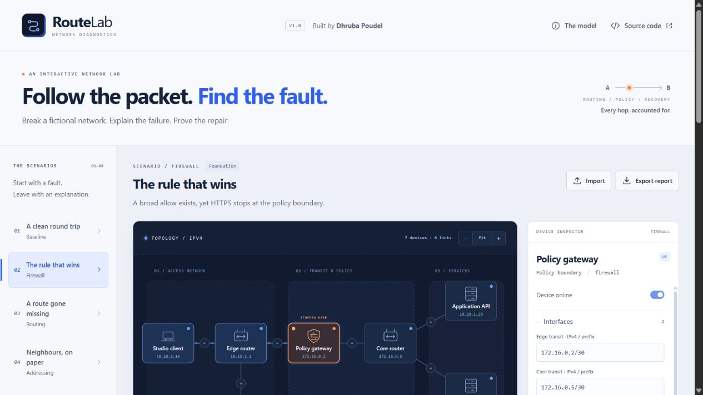

Original project · Networking & security engineering
RouteLab
Trace the packet.
Explain the failure.
Prove the repair.
- The problem
- A failed connection needs a precise explanation: route, link, policy, service or return path.
- My contribution
- A deterministic forwarding engine connected to an inspectable visual lab and editable configuration.
- Engineering focus
- Actual model decisions drive the trace. Changing a rule or route changes the computed result.

A connection failure is a chain of decisions.
A service can be healthy while a route is missing. An allow rule can exist while an earlier deny wins. A request can arrive at its destination while its response has no path home. A useful diagnostic interface makes these distinctions visible.
I built RouteLab to connect networking concepts to a working, editable model. Visitors follow a packet through a fictional service network, inspect the decision that stops it, change configuration and rerun the same request. The project makes my cloud computing and networking studies tangible through implemented algorithms and an original technical interface.
A request reaching the API is only half the result. RouteLab reports delivery only after the separate response packet also reaches its source.
Calculate the path instead of drawing an answer.
Strict IPv4 and longest-prefix routing
The TypeScript engine parses IPv4 addresses as unsigned 32-bit values and calculates CIDR membership, including /0 and /32 boundaries. Each node contributes connected routes and enabled static routes. Selection uses longest prefix, then lower metric, then stable route ID.
The chosen next hop must belong to an actual attached point-to-point peer. Both interface subnets must contain the other peer’s address, the link must be available, and an endpoint cannot act as a forwarding router. An unreachable selected next hop produces a failure; the engine does not silently substitute a graph shortcut.
A small, explicit firewall model
At the policy gateway, enabled rules run in ascending priority and rule-ID order. The first rule matching the source, destination, protocol and destination port decides the packet; no match means implicit deny. The model is deliberately stateless: the response needs its own matching policy and route.
Bounded execution and reasoned evidence
Transit routers decrement TTL. Repeated visits consume TTL too, including a packet that loops back to its originating router. Each step identifies its phase, node, decision and applicable route, rule or link. Trace results retain the forward and return paths and the sum of configured link transit costs.
REQUEST client → edge → firewall → core → api
RESPONSE api → core → firewall → edge → client
RESULT delivered only when both paths succeedAn interface built around investigation.
The original topology uses ink-blue surfaces, cobalt highlights and signal-orange accents. Device positions, link states and packet playback make the network readable, while the trace provides a text explanation of each decision. The diagram and explanation describe the same computed result.
Manual configuration makes the lab more than a fixed tutorial. Visitors can explore node availability, interface CIDRs, routing and firewall configuration, and link states. A focused scenario repair changes the intended fault while preserving unrelated edits.
Topology and diagnostic exports make a result inspectable outside the visualisation. Imported topology JSON is checked for supported schema, valid addresses and ports, duplicate identifiers and endpoints, dangerous object keys and explicit size limits before it becomes an active model.
Failures that lead to different diagnoses.
| Scenario | Diagnostic distinction | Focused repair |
|---|---|---|
| A clean round trip | Request and independent response both succeed. | Baseline; no change required. |
| The rule that wins | An earlier deny matches before the intended HTTPS allow. | Disable the accidental deny. |
| A route gone missing | The gateway has no enabled matching private-network route. | Re-enable that route. |
| Neighbours, on paper | The physical peer no longer belongs to the local interface’s subnet. | Correct the transit CIDR. |
| A severed handoff | The selected route exists but its physical link is disabled. | Restore that link. |
| Back to the same router | A mistaken next hop creates a loop until TTL expires. | Point the route towards core. |
| Half a conversation | The API receives the request; the response lacks a route. | Restore the return route. |
| Reachable, not listening | The packet reaches its destination but its requested service is disabled. | Enable the HTTPS service. |
Test the rule, the failure and the repair.
The public source separates the model from its React interface. Engine tests assert IPv4/CIDR boundaries, route selection and tie-breaking, actual adjacency, firewall priority, independent return-path failure, unavailable nodes and links, service checks and TTL-bounded loops. Each supplied fault is computed through the same engine used by the interface and checked again after its focused repair.
Further checks exercise malformed and hostile JSON, size bounds, duplicate IDs and addresses, input immutability and repairs that preserve unrelated changes. UI and published-browser checks remain separate evidence; a passing model test does not establish keyboard usability, mobile layout or a successful deployment.
The repository records the release’s actual tests, build and verification scope. Configured transit costs are simulation inputs, not a benchmark of a real network or measured customer performance.
Inspect the implementation, tests and release evidenceA useful teaching model with a defined boundary.
RouteLab models fictional IPv4 point-to-point networks, connected/static routes, stateless packet policy, service availability and an independent response path. The simulation computes in the browser. Device addresses identify model objects; the application does not probe those hosts or capture real traffic.
The model does not implement DNS, ARP, NAT, dynamic routing, TCP handshakes or TLS. It is not a complete router, a vendor firewall emulator or a production security assessment. Modelled latency sums configured transit costs and excludes real application processing, queueing and network measurements.
The original application is maintained in its own public repository. This case presents the technical contribution and operating scope without claiming client deployment, financial value or business time savings.